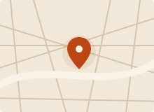

LE FONDATEUR · PAUL DECHEWSKY
Paul Dechewsky, une vie en peinture.
Artiste et galeriste à Paris, Paul Dechewsky vit de sa passion pour la peinture depuis plus de trente ans. DEDAL DE COULEURS en est le prolongement.
ARTISTE ET GALERISTE
Peindre, exposer, partager.
Depuis plus de trente ans, je travaille dans le milieu artistique. Je peins, mais j’aime aussi faire découvrir le travail des autres. Dans ma galerie, mes propres œuvres côtoient celles d’artistes de la mouvance expressionniste.
Soutine, Modigliani, Kikoïne, Pascin, Chagall, Picasso… Leurs univers nourrissent l’identité de DEDAL DE COULEURS. J’imagine cette galerie comme un lieu où l’on peut prendre le temps de regarder, poser une question et parler de ce qu’un tableau nous fait ressentir.
Parlons d’art.
Vous avez repéré une œuvre, une question sur un artiste ou un projet d’exposition ? Je serai heureux d’en parler avec vous et de vous accueillir à la galerie.
10 rue de la République75000 Paris 01 63 45 85 56
dedal@gmail.com Voir les œuvres

Venir à la galerie
10 rue de la République
Paris
Plan indicatif · Adresse du projet pédagogique
Gardons le lien.
Recevez les actualités de la galerie et les annonces de nos expositions.
M’inscrire aux actualités